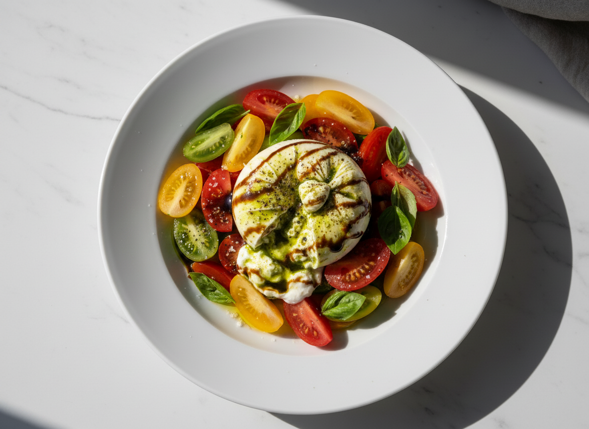
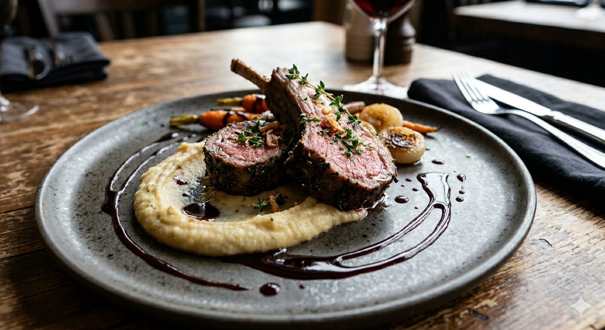

A Symphony of Flavors အရသာတို့၏ ပေါင်းစပ်မှု
Welcome. Today, I present a carefully curated three-course set menu designed to awaken your palate and delight your senses. ကြိုဆိုပါတယ်။ ဒီနေ့မှာတော့ သင့်ရဲ့ အရသာခံဖုလေးတွေကို နိုးကြားစေပြီး အာရုံတွေကို ကြည်နူးစေမယ့် ဂရုတစိုက်ရွေးချယ်ထားတဲ့ ဟင်းပွဲ ၃ မျိုးပါ Set Menu ကို တင်ဆက်ပေးသွားမှာပါ။

Wild Mushroom & Truffle Velouté တောမှို နှင့် ထရက်ဖယ်လ်ဆီမွှေး ဟင်းချိုအနှစ်
An earthy, velvety soup crafted from roasted wild mushrooms, finished with a touch of fresh cream and a decadent drizzle of white truffle oil to awaken your senses. လှော်ထားသော တောမှိုအမျိုးမျိုးဖြင့် ပြုလုပ်ထားပြီး ခရင်မ်အနှစ်နှင့် အလွန်မွှေးကြိုင်သော ထရက်ဖယ်လ် (Truffle) ဆီမွှေးတို့ဖြင့် ပေါင်းစပ်ဖန်တီးထားသည့် ကတ္တီပါသားကဲ့သို့ နူးညံ့သော ဟင်းချိုအနှစ်ဖြစ်ပါသည်။

Heirloom Tomato & Artisanal Burrata ရောင်စုံခရမ်းချဉ်သီး နှင့် ဘူရာတာဒိန်ခဲသုပ်
A vibrant, refreshing transition featuring creamy Burrata cheese from Puglia, paired with sweet, thinly sliced heirloom tomatoes, fresh basil oil, and aged balsamic reduction. အီတလီနိုင်ငံ ပူလီယာ (Puglia) ဒေသထွက် အလွန်နူးညံ့ပြီး အရည်ရွှမ်းသော ဘူရာတာ (Burrata) ဒိန်ခဲကို၊ သဘာဝအချိုဓာတ်ပြည့်ဝသော ရောင်စုံခရမ်းချဉ်သီးများ၊ ပင်စိမ်းဆီမွှေး၊ သက်တမ်းရင့် ဘော်ဆာမစ် (Balsamic) ရှာလကာရည်အနှစ်တို့ဖြင့် တွဲဖက်ထားသော လန်းဆန်းစေမည့် အသုပ်ဖြစ်ပါသည်။

Herb-Crusted Rack of Lamb ဟင်းခတ်အမွှေးအကြိုင်ကပ် သိုးနံရိုးကင်
The star of the evening. Tender rack of lamb coated in a fragrant pistachio and rosemary crust, served with a rich red wine demi-glace and smoked potato purée. ဒီညစာရဲ့ ကြယ်ပွင့်ပါ။ ပစ်စတာချီယို (Pistachio) နဲ့ ရို့စ်မေရီ (Rosemary) အမွှေးအကြိုင်တွေ ကပ်ထားတဲ့ နူးညံ့တဲ့ သိုးနံရိုးကင်ကို၊ ဝိုင်နီဆော့စ်အနှစ် (Red Wine Demi-glace) နဲ့ အခိုးအငွေ့နံ့သင်းတဲ့ အာလူးထောင်းတို့နဲ့ တွဲဖက်တည်ခင်းထားပါတယ်။